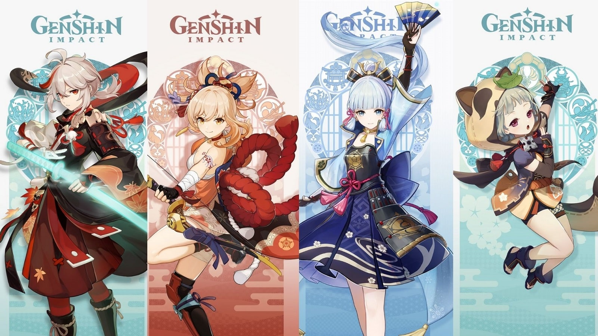

Tingkatkan Rank Adventure dan selesaikan misi untuk memperoleh sang Shining Idol - Barbara. Dapatkan lebih banyak Karakter dan Senjata langka di versi baru ini.
Inazuma merupakan sebuah region baru yang terinspirasi dari Jepang dalam hal lanskap, arsitektur, dan nama.
Itu menandakan pemain akan menemukan banyak bunga sakura, samurai, dan istaga shogun yang besar.
Inazuma juga akan diperintah oleh Electro Archon, yang membuat tema keseluruhan area ini adalah petir.
Inazuma terbagi menjadi tiga area yang terdiri dari Pulau Narukami, Kannazuka, dan Yashiori.
Karakter Baru: Kamisato Ayaka, Yoimiya, dan Sayu
Kamisato Ayaka merupakan karakter Cryo (elemen es) bintang lima yang menggunakan senjata pedang.
Ayaka akan menjadi di Wish banner karakter bintang lima pertama, yang berarti dia akan dirilis pada 21 Juli.
Kedua adalah Yoimiya, karakter ini memiliki elemen Pyro (api) yang menggunakan senjata panah.

Yoimiya merupakan karakter bintang lima yang akan muncul di Wish Banner Character setelah event Ayaka berakhir.
Ketiga adalah Sayu, karakter bintang empat yang memiliki elemen Anemo (angin) dengan senjata Claymore.
Terakhir, karena Inazuma bertema Elektro, Traveler (karakter anda sendiri) akan mendapatkan elemen Elektro.
Sebelum Genshin Impact 2.0, Traveler hanya bisa memilih antara Anemo (Mondstadt) dan Geo (Liyue).
Quest Baru
Archon Quest menjadi tugas baru yang akan dihadapi pemain dalam game.
Ada dua misi yang akan diberikan, mulai dari Chapter II: Act I - The Immovable God and the Eternal Euthymia dan Chapter II: Act II - "Stillness, the Sublimation of Shadow.
Tugas kedua adalah Story Quest, mulai dari Kamisato Ayaka hingga Yoimiya.
Sedangkan tugas selanjutnya adalah World Quest.
Ilustrasi Genshin Impact (Source: Pinterest)
Senjata Baru
Thundering Pulse, merupakan panah petir dengan rating bintang 5. Selanjutnya ada Mistsplitter Reforged yang merupakan pedang bintang 5.